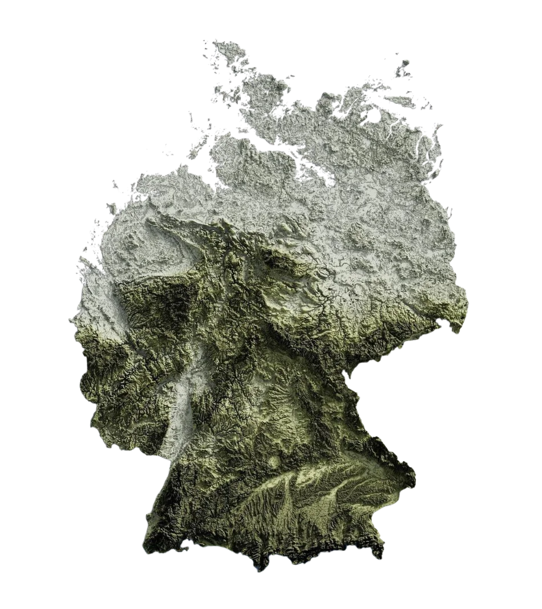

Seit 2025 · Spenge, Ostwestfalen
Wir lesen den Boden,
bevor gebaut wird.
Baugrunduntersuchung, Altlastenerkundung und Laboranalytik aus einer Hand — von der Sondierung im Feld bis zum unterschriebenen Gutachten. Wir kommen raus, bohren, messen und prüfen: Rammkernsondierung, Plattendruckversuch, Kornverteilung, Schadstoffanalytik. Anschließend sagen wir Ihnen in klaren Worten, was unter Ihrem Vorhaben liegt, was das für die Gründung bedeutet und womit Sie bei der Entsorgung rechnen müssen.
300
Zufriedene Kunden
3.000+
Gutachten
48 h
Erstrückmeldung

Büro & Labor
Spenge
Waldstraße 1 · 32139, Spenge